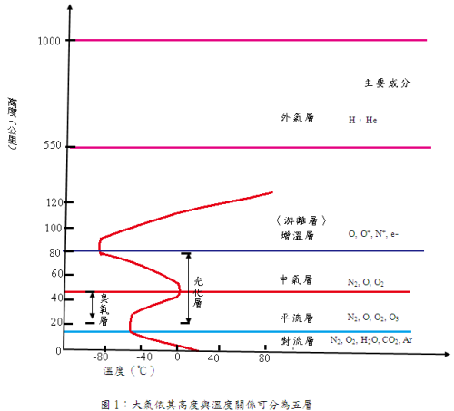
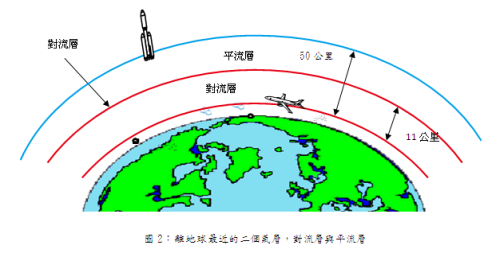
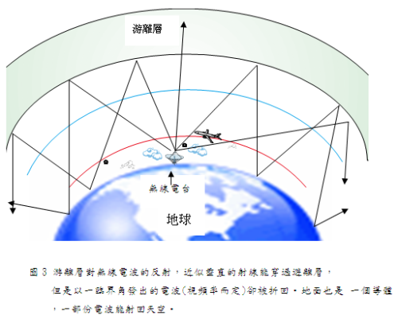
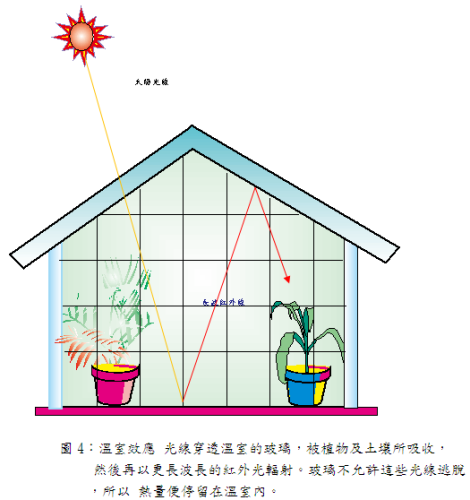
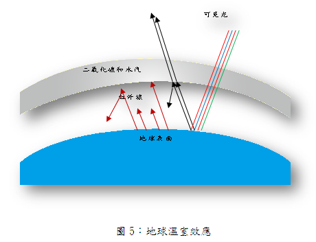
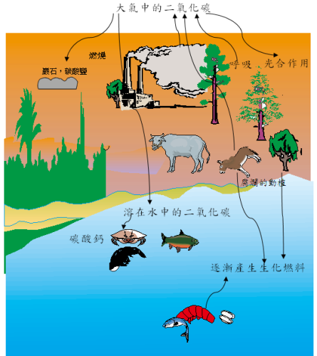
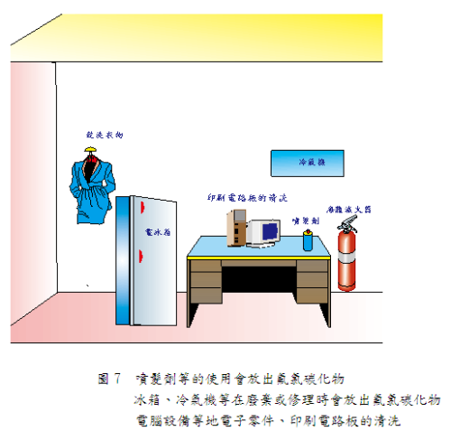

環境保護兩大問題 :地球的溫室效應與臭氧層的破壞
一、 大氣層
地球表面上空大約為厚度1000公里的氣體所覆蓋，大氣層不僅提供地球上所有生物包括人類和動物呼吸及植物生長所必需的氧氣，同時也使地球免於過熱、過冷及受紫外線及隕石的侵襲，而在無線電通訊方面也扮演了重要的角色。
1.大氣層的分類
大氣是氣體的混合物，受地球重力的吸引，環繞在地球表面，越接近地面的空氣越濃，越高的地方空氣越薄。為了便於探討，常依其溫度特性
，將大氣分成五層如圖1，即對流層、平流層、中氣層、增溫層（或稱游離層）、外氣層等5個分層。

2．五個大氣層
（1）離地面最近的兩個大氣層一一對流層和平流層
如圖2，離地面11公里以下稱為對流層（Troposphere），大部份的空氣都 包含在這一層，此層較下方有水蒸氣形成的雲，離地表6公里以上的空氣即很稀薄，以致於爬山到此高度時須要帶氧氣呼吸。
對流層之上為平流層（Stratosphere），在地表上方11-50公里處，中央部份為臭氧層（Ozone layer） ，它可阻擋太陽的紫外線，人類若遭受過多紫外線繞照射會嚴重燒傷皮膚，故臭氧層對人類生活很重要。事實上，地球表面的空氣中臭氧的含量非常少，即使在海邊也一樣，幸好也是如此，因為臭氧是很毒的氣體。顧名思義平流層氣流比對流層安靜。現代的噴射機爬高性能較好，為了避免在對流層中受到垂直氣流的困擾，常常飛到平流層底部，但噴射機也只能在平流層內的較低部份飛行，因為較高部份沒有足夠的氧可供燃料燃燒，火箭在超過平流層的高度飛行時，必須自備液態氧。

（2）中氣層
從平流層頂端一直延伸到離地面約80公里處稱為中氣層，此層較平流層乾 燥， 無雲、無雨，主要成分為N2、0， 02等。
（3）增溫層
從地面80公里至550公里之間是所謂的增溫層，為什麼叫作增溫層呢?因為 過了中氣層，空氣的密度已經極為稀薄到聲音無法傳播的程度，同時溫度從中氣層頂-90。C急劇升高，到了550公里已達1500℃它，因此稱為增溫層，此層溫度會升高的主要原因是宇宙線及太陽輻射光中的極短波等含有極高能量會與此處的空氣碰撞，產生電離、光化作用，空氣被離子化或被碰撞後所生成的離子及原子帶有很高的能量，因此溫度迅速增加。又因離子特別多，此層又稱為游離層，游離層對波長較短的輻射可以完全穿透，而極長波(比紅外線波長還長)則幾乎完全無法通過而被反射回去。普通無線電波的波長都很長，所以可以在地表與游離層閒來回反射，因而能超越地形和地表曲面的限制，傳達到很遠的地方。如圖3。

4．外氣層
從離地面55OKm~l0OOKm處，為大氣層中最高的區域；主要包括原子及離子 的氧、氫及氨，這裡的粒子像要脫離地球的地心引力，卻被地心引力所束縛。在外氣層之外，乃是末被地心引力所束縛的地區，稱為星際太空。
二、 地球的溫室效應
1.何謂溫室效應
培養植物的玻璃房屋之所以能保持相當高的溫度，是因日光短波(紅、澄、黃、 綠、藍、龍、紫及微量紫外線)輻射可以穿過溫室的玻璃，被植物及土壤所吸收，吸收可見光的植物及土壞再以波長比紅光更長的紅外線輻射。但這種紅外線無法穿透玻璃而逸出之故，因之轉換為熱能使玻璃房屋能保持相當高的

2．地球的溫室效應
太陽所發射出來的光，大約有45%屬可見光，46%在紅外光範圍，另有9%為紫外光部分。當這些輻射通過大氣層時，屬於極短波的紫外線有99%被臭氣層所吸收，另外紅外光部份被二氧化碳及水所吸收，故只有可見光能透過大氣而到達地面。當這些可見光的能量被地面吸收後，再從地面產生更長的紅外光向外發散。這些波長較可見光長的紅外線輻射到大氣層時有些又被二氧化碳和水蒸氣吸收，剩下不被吸收的紅外線則逃離地球，因為熱可被保留在大氣中，溫暖地球的表面，這種現象稱為地球溫室效應。當大氣的二氧化碳和水的濃度增加所吸收的紅外線也增加，大氣的溫度也增加，如圖5。照道理，高山比山腳更靠近太陽，但爬山的人都有這樣的經驗，爬的月愈高愈覺得寒冷。這是因為太陽的光線照到地球表面後，被地面吸收地面，放出波長更長的紅外線，溫暖大地，因此離地面愈遠，溫度就愈往下降。

3. 二氧化碳的平衡
每天，地球上的每個人、每隻動物、每棵植物、每座焚化爐都在吸收氧氣，吐出二氧化碳。就拿人來說，每天差不多要呼出五公升多的二氧化碳。
如此下去，氧氣豈不會被用光，世界豈不會成了二氧化碳的世界？人類豈不遭到覆滅了嗎? 十九世紀時的英國物理學家湯姆遜．克爾文就十分憂慮地說:「隨著工業的發達與人口的增多，五百年以後，地球上所有的氧氣將被用光，人類將趨於滅亡!」
這真是杞人憂天；因為這些人只是看到問題的一面，即氧氣的消耗和二氧化碳的產生，卻沒有看到問題的另一面，即氧氣的生成和二氧化碳的消耗。
瑞士的科學家謝尼伯曾經做過這樣的一個實驗:他採集了許多植物的綠葉，浸在水裡，放到陽光底下。很快的，葉子不斷地吐出一個個小氣泡，謝尼伯用一隻試管收集了這些氣體。這些氣體是什麼呢?當謝尼伯把一片點著了的木條扔進試管時，木條猛烈地燃燒，射出耀眼的光芒，這就是氧氣，因為只有氧氣才能夠幫助燃燒。
接著，謝尼伯又往水裡通進二氧化碳。他發現，通進去的二氧化碳越多，那麼綠葉排出的氧氣也就越多。謝尼伯得出了這樣的結論:「在陽光的作用下，植物靠著二氧化碳產生營養，而排出氧氣。」
原來，地球上那浩瀚的森林、草原、農作物，隱藏著一個巨大的秘密；在陽光底下，植物的綠葉會吸收空氣中的二氧化碳，與從根部運來的水分、養料化合變成澱粉、葡萄糖等，同時放氧氣，這叫做「光合作用」。
據計算，三棵大樹每天所吸收的二氧化碳，等於一個人每天所吐出的二氧化碳。
每年，全世界的綠色植物，從空氣中要吸收六二三億噸的二氧化碳。還有一隻看不見的手，在從空氣中攫取二氧化碳哩，這就是石頭。
巖石受著風吹雨打，日子久了會風化、分解，正如俗話所說:「滴水穿石」。巖石會吸收空氣中的二氧化碳，變成碳酸鹽或者酸式碳酸鹽，然然經雨水沖洗，從江河移到海洋，並且部份地沉積到海底，形成新的巖石。每年，由於風化而消耗掉的二氧化碳，大約達四0~70億噸。
由此可見，自然界中，氧與二氧化碳的循環，生生息息，使大氣中的氧與二氧化碳能保持一定值，如圖6，當動植物行呼吸作用燃料燃燒時雖然不斷地消耗大氣中的使它變成二氧化碳和水時，植物卻行光合作用吸入水及二氧化碳而排出氧氣。同時植物或動物腐爛時或動、植物燃燒亦會放出二氧化碳，大氣中的二氧化碳也被河流或海水吸收變成碳酸鈣，而成為水生動物的外穀。如此長久以來大氣中的氧和二氧化碳含量保持不變，生生息息循環着。

4．二氧化碳增加使地球的溫室效應愈顯著
由於人類的工業文明，濫砍樹木製造紙及傢俱使大氣中CO2被樹木吸收的機會減少，同時對燃燒木頭，化石燃料(煤及石油)等能源用量的增加造成大量的CO2，進入大氣也比半世紀前增加很多。據估計，從產業革命到現在，大氣中CO2，的濃度已增加二十幾百分比，破壞了自然界CO2，的平衡，這種情形如果持續下去，到了西元2030年，因溫室效應氣體所產生的溫室效應將會是產業革命以前的兩倍。那時所引起的溫室效應將使全球的氣溫平均約上升攝氏1．5~8.5度，氣溫的上升依緯度而有不同，特別是北半球高緯度地區上升十分驚人。從十九世紀末到現在約上升了攝氏0.3~0.7度。地面上的溫度若增加會熔化雪與冰流入海裡，再加上海上部分冰山及南北極冰帽山的熔解，則產生海水膨脹海岸氾濫，據推算若地球的平均溫度上升1．5~3．5度，則海平面大約會上升0．2~1．1公尺。如果海平面上升1公尺的話，尼羅河口會失失15%的耕地，恆河口則減少8%耕地，由珊瑚礁形成的島國如馬爾地夫，目前其海拔只有兩公尺高，上升海平面一公尺，其生存將是岌岌可危。此外氣溫上升也會對生態，及農業帶來很大影響。假如氣溫上升，則同種植物會向高緯度移動，如溫度上升30℃則美國富庶的加州農產區會枯乾，轉移至北方。其他溫度效應還有降低畜牧業繁殖力，使漁場產生變化及對大氣和健康的不良影響等。由以上各種影響可以看出，在短時間內氣溫急遽上升，不但會影響人類社會，對人類經濟活動也有很大傷害。而這些影響大部分無法恢復原狀
。因此，人類為了適應溫室效應，勢必花費大量金錢，控制溫室效應實在是當務之急。
5．防止地球溫室效應組織
既然溫室效應危機為大家所認識，世界各國也就會商開始制定控制溫室效應的政策，1987年首先在義大利貝拉吉歐舉行控制溫室效應的政策檢討會。之後，各國政府及各種國際機關也主辦了各式各樣的會議，特別是1988年6月的多倫多會議上提出至西元2005年已開發國家的二氧化碳排出量應比目前減少20%的限制。聯合國也首次在1988年3月通過保護地球氣候決議案呼籲國際支援IPCC(氣候變動各國委員會)的活動外，並要求WMO (世界氣象組織)事務總長及UNEP(聯合國環境規畫署)事務局長蒐集有關地球溫室效應的科學研究及其影響的報告，同時並對防止溫室效應的對策進行評估。次年即1989年11月，更由68個國家參加在荷蘭那德威克舉行的「大氣污染和氣候變動環境首長會議」，得到下列結論：
（1）全世界初次對造成溫室效應的二氧化碳等氣體應予以安定化的觀念， 獲得共識，具體目標則於IPCC中檢討。
（2）立即停止濫伐熱帶林，並以21世紀初達到森林正成長為暫定目標，其實現的可能性，也將在IPCC中檢討。
這可說是完成地域溫室效應對策的劃時代宣言。
西元1992年6月在巴西首都里約熱內盧更進一步舉行「世界高峰會議」商討削減二氧化碳排放總量事宜，與會國家總共達154國。該會深受世人矚目，會中各國代表簽署「氣候變化綱要合約」並宣示於公元2000年時C02，排放量抑制到1990年水準，且在公2005年時，再削減1990年排放量。這比1988年6月的多倫多會議僅限制已開發國家的二氧化碳排出量，更具體更向前邁進一步。
三、 臭氧層的破壞
1. 臭氧層可吸收紫外線
太陽所發射出的日光，大約有45%屬於可見光，46%在紅外光線範圍，另有9%為紫外光線部分，當這些輻射光通過大氣時，那些極短波長的紫外線早在上層大氣(即平流層)中遇到氧分子(02)被氧分子吸收變成臭氧(03)，所產生的臭氧又吸收波長較長的紫外線，再分解成氧分子，即：
303吸收極短波的紫外線變成202
03 吸收極短波的紫外線變成202十0
陽光經過這兩次吸收，幾乎已過濾了99%有害的紫外光。若大氣中無03，存在，則人類經過這些有害輻射線的照射，將會使我們皮膚燒焦，眼睛 變瞎。
2. 氟氯碳(Freons)及一氧化氮對臭氧的破壞
兩種化合物即氟氯碳(Freon，碳、氟、氯的化合物)與氮的氧化物，因可能消耗臭氧而受到廣大的注意。一氧化氮（NO）是由超音速飛機的引擎所產生，這些飛機釋放出大量氮的氧化物，直接進入平流層。
臭氧層的臭氧的濃度因以下的化學反應結果而降低，需要注意的是在反應過程中NO並未消耗但臭氧卻逐漸減少。
NO十03→ NO2十O2
N O2十O→ NO十O2
氟氯碳本身不含毒性，一般也不會和其化物質起反應。一般常作為冰箱及冷氣機的冷媒、噴髮膠、及電子零件洗潔劑等，氟氯碳經使用後，散於大氣中，日久漸漸由對流層混入平流層，與強烈的日光作用後，會產生氯原子。
CF2Cl2 十日光→ CF2Cl+ Cl
CFCl3十日光 → CF Cl2，+Cl
反應後產生的氯原子，接著便以下列一系列反應來破壞臭氧，氯原子在第二步驟又重新產生，所以此反應能一再重覆。如此，每一個氯原子約可破壞一萬個以上的臭氧分子。
Cl十03→ ClO十02
ClO十 0 →Cl十02
3. 為什麼臭氧層會遭受破壞?
對於地球生物十分重要的臭氧層，近年來因為人類長期且大量的使用氟氯碳化物而遭受破壞，氟氯碳化物本身不含毒素，碰到其他物質時一般也不會起化學反應，有些種類的氟氯碳具有易溶於油中的特性。冰箱及冷氣機中的冷媒，坐墊中的泡綿，噴霧劑等常利用到這種物質，最近電子零件的洗潔劑也採用氟碳化物，及消防器材中的海龍滅火器也使用氟氯碳化物，因此世界上經常大量使用各種氟氯碳化物，以1985年為例，全世界的總消費量約114萬噸，可見氟氯碳化物已是現代社會中被普遍利用的物質了。這可由圖7證明其被廣泛使用的原因。

大部分的氟氯碳化物在普通的環境下，都有不易分解的安定性質，這些氟氯碳化物經工廠或一般人日常生活等利用過後，散佈至大氣中，日久漸漸由對流層混入平流層，然後在平流層中會和經穿透平流層時的強烈陽光作用，產生分解，放出氯氣，氯氣會破壞臭氧分子再釋出氧和氯化氧，氯化氧又和氧作用產生氯和氧，如此反覆的反應(此反應也稱為連鎖反應)，每一個氯原子約可破壞一萬個以上的臭氧分子。
4.臭氣層破洞
由於人們毫不節制的使用氟氯碳化物，使臭氧層的臭氧濃度日漸稀薄。1985年末終於證實南極特殊的氣候條件下，氟氯碳化物迅速地破壞臭氧層，約每年臭氧會急遽減少成原來一半。南極跟其周圍的臭氧濃度比起來，濃度較低，有如破洞一般故稱南極臭氧層破洞。
5. 臭氧層破壞下的各種傷害
如果在西元2085年以前還未有妥善的對策，預估臭氧層將會減少為目前的一半以下，而原由臭氧層所吸收的有害紫外線，將會以兩倍於目前的份量直射到地球表面。
這種結果將使得人類罹患皮膚癌及白內障的機率大為提高。據估計，臭氧層如減少1%，有害人體健康的紫外線會提高約2%，如此皮膚癌發生的機率將會比目前增加約3%左右。同時紫外線增加海洋生態系中的淺海浮游生物也將遭受致命的影響，農產品也將面臨收穫減少的問題。例如：
列為重要農作物的大豆，將會因紫外線增加而引起病蟲害，導致收穫減少。再者，一旦紫外線接近地球表面，預料空氣污染物所引起的光化學煙霧現象也會惡化。此外，臭氧層的另一種功用是吸收紫外線並轉化成熱能，以維持平流層的溫度，如果這個功能失調，將會引起氣候變動，釀成災害。
6. 國際防止臭氧層破壞組織
南極上空臭氧層破洞發表後，終於引起國際輿論的注意終於先後有「保護臭氧層維也納條約」及「有關破壞臭氧層物質的蒙特婁公約」兩個保護臭氧層的國際性組織成立。維也納條約於1985年通過其中記載國際間應互相協調進行有關臭氧層和破壞臭氧層的研究及訂定出適當對策。而蒙特婁公約即是根據這項條約於1987年訂定通的。根據蒙特婁公約有關各國氟氯碳化物之生產量和消費量。從1989年到1998年將施行階段性削減，以期1998年氟氫碳化物消費量能降至1986年度的50%。1989年5月在赫爾辛基召開第一屆維也納條約及蒙特婁公約締約國會議時更進一步發展政治宣言，宣言內容為:擴大條約加盟國，列入限制項目中的氟氯碳化物最遲要在西元2000年前全部停用，儘可能迅速完全廢除海龍滅火器並對尚未列入黑名單的破壞臭氧層物質加以限制。由於氟氯碳化物不但會破壞大氣臭氧層，更是造成地球溫室效應僅次於二氧化碳的元凶，因此1992年在丹麥召開的蒙特婁議定書第四次締約國會議時，決定對氟氯碳化物的禁用，提前於1996年元月實行，看來人類或可免於在紫外光線照射陰影。
總結：京都議定書
1.京都議定書（Kyoto Protocol；全名為“聯合國氣候變化框架公約的京都議定書”）是《聯合國氣候變化框架公約》（United Nations Framework Convention on Climate Change，UNFCCC）的補充條款。1997年12月在日本京都由聯合國氣候變化框架公約參加國三次會議制定的。其目標是“將大氣中的溫室氣體含量穩定在一個適當的水準，進而防止劇烈的氣候改變對人類造成傷害”。
政府間氣候變化專門委員會（Intergovernmental Panel on Climate Change，簡稱IPCC）估計從1990年到2100年110年間全球氣溫將升高1.4℃~5.8℃。目前的評估顯示，京都議定書如果能被徹底完全的執行，到2050年之前僅可以把氣溫的升幅減少0.02℃~0.28℃，因此，許多批評家和環保主義者質疑京都議定書的價值，認為其標準定得太低根本不足以應對未來嚴重的危機。而支持者們指出京都議定書只是第一步，為了達到UNFCCC的目標今後還要繼續修改完善。
2. 1996年IPCC預估，若要在21世紀末將二氧化碳濃度穩定在工業革命前的兩倍（550 ppm），則目前全球排放量必須削減一半。但在1992年簽訂「氣候變化綱要公約」後，全球二氧化碳濃度仍在不斷上升，原公約減量目標普遍認為並未被會員國認真執行，而在國際上引起極大的爭議，於是形成制定具有法律力的議定書的共識。於是贊在1997年12月於日本京都的「第三次締約國大會」（COP3）中簽署「京都議定書」，規範38個國家及歐盟（即所謂附件B國家），以個別或共同的方式控制人為排放之溫室氣體數量以期減少溫室效應對全球環境所造成的影響。
附件B國家必須在2008-2012年間將該國溫室氣體排放量降至1990年水準平均再減5.2%。根據京都議定書第25條規定，議定書必須獲55個以上國家批准和其合計二氧化碳排放量至少占附件一國家1990年二氧化碳排放總量的55%，議定書才能正式生效。
3.京都議定書自2005年2月生效
《京都協議書》規定，所有發達國家在2008年—2012年間必須將溫室氣體的排放量比1990年削減5.2％。其中，歐盟削減8％，美國削減7％，日本削減6％，加拿大削減6％。但該議定書允許澳大利亞增加8％的溫室氣體排放量，挪威增加1％，冰島增加10％。俄羅斯可維持1990年的排放水平。
該協議還規定，包括中國和印度在內的發展中國家沒有減少排放量的義務，可自願制定削減排放量目標。《京都議定書》需要佔全球溫室氣體排放量的55％以上，至少55個國家批准后才能生效。
美國的溫室氣體排放量佔全球總量的25％以上，該國雖於1998年11月簽署了議定書，但2001年3月，布什政府以“減排會影響美國經濟發展”和“發展中國家也應該承擔減排和限排義務”為由，拒絕批准《京都議定書》。由於頭號排放大國美國拒絕批准，《京都議定書》遲遲不能生效。
2004年10月前，全球共有126個國家批准了《京都議定書》，所佔溫室氣體排放量為全球的44.2％。2004年11月5日，俄總統普京簽署《京都議定書》，成為第127個批准國。由於俄羅斯的排放量佔全球的17.4％，因此，俄羅斯的批准使得《京都議定書》終於可在明年2月正式生效。
繼俄羅斯將其批准文書呈交給聯合國秘書長安南後，在巴黎收到的聯合國氣候綱要公約當局發表的聲明指出，「京都議定書將自2005年2月16日起，對128個簽署國具有法律拘束力。」
1992年里約高峰會催生的聯合國氣候綱要公約當局，係京都議定書的母公約。俄羅斯批准京都議定書行動，終結了該劃時代協定的前途未卜命運。1997年達成協議的京都議定書旨在遏止會擾亂地球氣候系統的溫室效應氣體排放。京都議定書達成協議後，花了4年時間才敲定繁雜的執行規範。美國於2001年退出京都議定書，宣稱為達成目標所耗費的成本對美國經濟而言代價太高，美國經濟大量仰賴礦物燃料，而問題的來源即是無節制使用礦物燃料。身為全球最大二氧化碳排放國的美國退出京都議定書，使得京都議定書瀕臨夭折邊緣，但俄羅斯批准京都議定書，使京都議定書得以跨越生效所需的門檻。
4.京都議定書內容與生效條件
京都議定書的主要內容
（1）減量時程與目標值：「聯合國氣候變化綱要公約」之附件一國家（係指OECD中除墨西哥外的所有24個成員、歐盟、前蘇聯各共和國及前東歐共產國家，合計37個成員）及摩洛哥與列支敦斯登共39個國家，將人為排放之六種溫室氣體換算為二氧化碳當量，與1990年相較，平均削減值5.2%，同時採差異性削減目標之方式；歐盟及東歐各國8%、美國7%、日本、加拿大、匈牙利、波蘭6%，另冰島、澳洲、挪威則各增加 10%、8%、1%。減量時程為2008至2012年，並以此5年的平均值為準。
（2）六種溫室氣體中，CO 2、CH4、N2O管制基準年為1990年，而HFCs、PFCs 與SF6為1995年。
（3）提出「京都機制」：包含「清潔發展機制」（CDM）（唯一跨越附件一國家與非附件一國家，由工業國對開發中國家進行技術及財務協助其溫室氣體減量計畫之機制）、排放交易（ET）及共同執行（JI）。
京都議定書生效的條件
（1）經各國國內程序批准議定書國家達55國。
(2） 批准京都議定書國家中，「附件一國家」成員之1990年CO2排放量須至 少占全體「附件一國家」成員1990年排放總量之55%。
（3）達成上述二條件後，則議定書於其後第90天開始生效。
各國1990年二氧化碳排放量佔附件一國家總二氧化碳排放量比例
（1） 美國36.1%（2） 日本8.5%（3） 歐聯24.2%（4） 俄國17.4%
（5） 加拿大3.3%（6） 澳大利亞2.1%（7） 其他國家8.3%